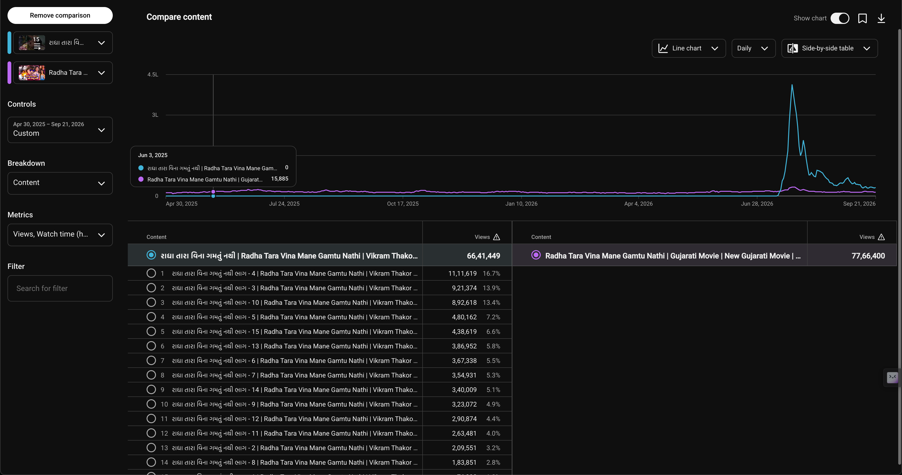
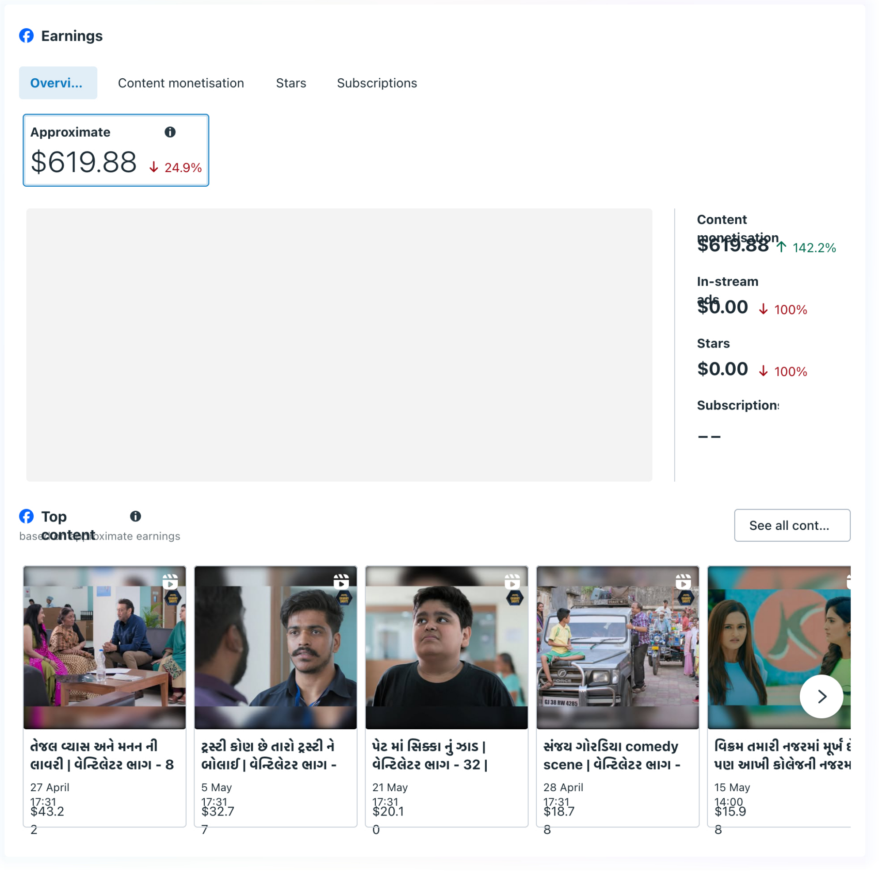

Case 04 · Gujarati system
One Film, Multiple Content Opportunities
The same film can become a full-length YouTube release, a serialised version, Shorts, and Facebook cuts.
Context
The opportunity was already in the library
If every film is a single upload, the pipeline is capped by the number of films. A strong catalogue can yield far more when format follows audience.
Problem
One upload limits the pipeline
The question shifted from "What should we post next?" to "What else can this film become?"
Strategy
Format follows audience
Evidence
Rakhewal: distribution run
| Format | Pieces | Views |
|---|---|---|
| Fresh full release | 1 | 6,556,372 |
| 14-part re-cut | 14 | 248,990 |
| Shorts | 148 | 10,967,825 |
| Total (tenure strategy) | 163 | 17,773,187 |
Format mix inside the tenure run
Views by format within the 17.77M tenure window
Pre-2026 Rakhewal uploads (about 1.06M) excluded so the comparison stays on tenure work.
Source analytics for the Rakhewal tenure distribution run on YouTube.

Radha Tara: original vs re-release
2023 lifetime vs July 2026 serialised re-release (15 daily parts)
Original 2023 lifetime 3,793,146 · 2026 re-release 6,423,457 (about 69% more in fourteen days).
Side-by-side comparison of the original upload and the serialised re-release.

Facebook recovery after the restriction window. Posting volume rose about 6.7x on Cinekorn Gujarati Facebook.

Results
One IP, a system
For Rakhewal: 1 film to 163 pieces to 17.77M tracked tenure views. Facebook posting volume rose about 6.7x after recovery.
Takeaway
What this showed
Catalogue value is not only how many films you hold. It is how many ways those films can be packaged, released, and discovered.